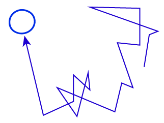
In modern microscopy, there is a family of super-resolution single particle tracking (SPT) techniques that enable investigators to follow the motions of individual molecules (e.g., proteins) in or on a cell with nearly millisecond time resolution and about ~10 nanometer spatial resolution. The observed motion generally is diffusive ... but what exactly does that mean? Clearly the behaviors of all cellular molecules are not the same.You probably already have a basic sense of what diffusion is: random, passive (not driven) motion. But there are plenty of subtleties to the physics of diffusion: diffusion can be passive but differ from 'simple diffusion'; an apparently standard distribtuion of step sizes can mask correlations among the steps that might indicate non-passive motion; passive diffusion can occur in a confined space and appear statistically like anomalous diffusion.
Here we'll go through the basics and enough of the subtleties to come up with simple diagnostic analyses that you can apply to real data. Be sure to look at the references given at the end, as this discussion will not be comprehensive.
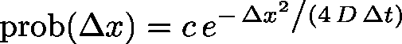 (1)
where $D$ is the diffusion constant and $c = 1 / \sqrt{4 \pi D \Delta t}$ is the normalization constant. A 'long-enough' time interval, roughly, is one in which numerous collisions have occurred; msec-scale intervals in modern microscopy are more than long enough.The Gaussian distribution arises for the same reason we see 'normal' distributions anywhere: each observed step is actually the summed result of many even smaller motions. The math behind this is non-trivial but you can understand it via the Central Limit Theorem. Or just roll a few dice. Even though a single die has a uniform distribution of 1/6 for each value, when you roll more than one and sum the values, the distribution of the sum develops a peak that gets more and more Gaussian as more dice are rolled.
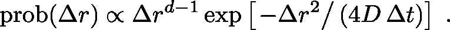 (2)
Imagine following the motion of a single molecule of interest - perhaps a labeled protein in a solution. This protein undergoes countless collisions with water and any other molecules that happen to be in in its environment. Each collision may barely budge the relatively large protein, but when added together these 'nano-crashes' lead to both translational motion of the protein's center of mass, as well as to orientational tumbling.
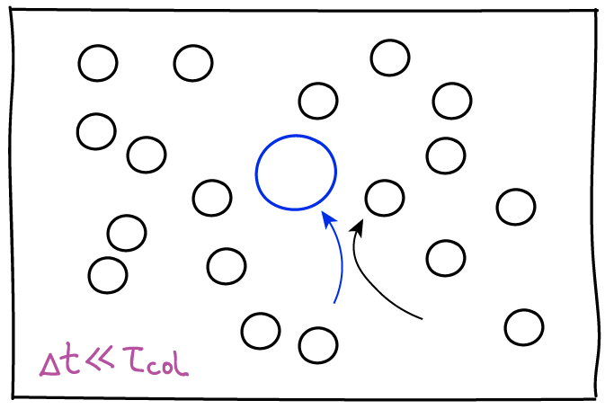
Another key point about diffusion is that, microscopically, the observation process - the "frame rate" - will affect how the motion is characterized. Consider simple diffusion of a molecule of interest in a homogeneous solvent, which roughly can be characterized by the average time between collisions, $\tau_{\mathrm{col}}$. Although it's technologically not possible, imagine we could observe the molecule's motion with a frame rate $\Delta t$ (we only see snapshots in time separated by $\Delta t$) and $\Delta t$ is much less than the collision time: then we would see the slow dance of molecules moving toward and away from one another according to standard Newtonian physics. This smooth behavior would seem to be at odds with the noisy random behavior we expect in diffusion. However, if we slow down the frame rate to a relatively feasible value where $\Delta t \gg \tau_{\mathrm{col}}$, then each snapshot of our evolving movie will only show our molecule's location many collisions after the preceding frame. It is this intermittent strobe-like view of the molecule's dynamics that will exhibit classic random "jumps." Of course, there are no jumps in reality, but only intermittency of observation.
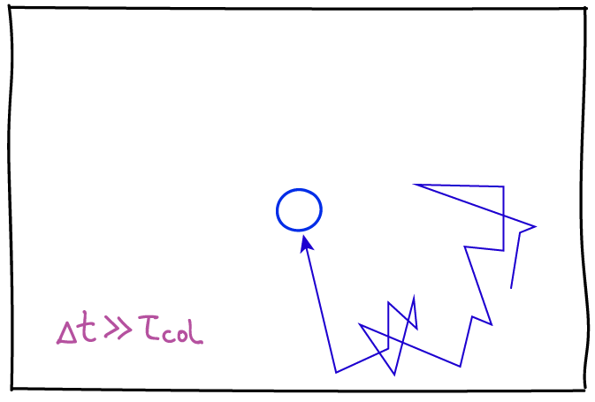
Of course all collisions aren't the same. A diffusing protein may find itself in a heterogeneous environment consisting of diferent types of solvent molecules or even quasi-immobile macromolecular structures (e.g., organelles for a soluble protein; and additionally membrane substructures, filaments or inclusions for a membrane-bound protein). A heterogeneous environment by itself may not change the diffusive behavior in a qualitative sense, but it may change the apparent behavior depending on the timescale of observation as well as the diffusion constant which quantifies the rate of diffusion. These points are discussed further below.
The presence of effectively immobile objects, such as long-lived cellular substructures including organelles or filaments, can qualitatively change diffusive behavior. The actin meshwork of filaments, for example, may keep molecules partially confined in little `corrals' (which literally are fenced-in areas to confine animals): this is called the 'picket-fence' picture. Going back to our diffusing protein, it may diffuse normally within a corral but only occasionally make jumps between corrals. This leads to diffusion which is slower than would be expected based on observing diffusive steps away from corral boundaries -- and hence is called subdiffusion, a notion which is quantified below. A corollary of this viewpoint is that if subdiffusion is observed due to a picket-fence/corral mechanism, then if the process is observed at timescales much longer than the typical time to escape from a corral, we again expect simple diffusion. Note that some cellular structures may lead to strict confinement.
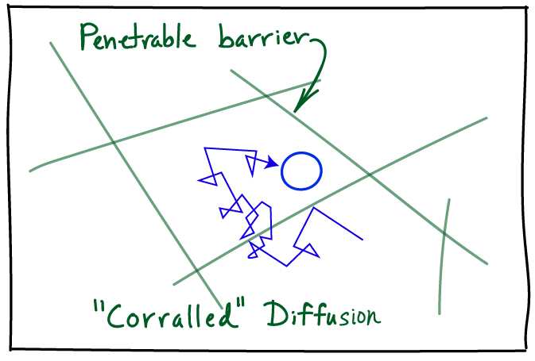 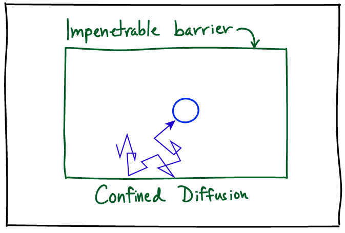
The mean-squared deviation (MSD), plotted as a function of 'time separation' is the first thing to examine. For simple diffusion, the MSD will increase linearly with time, starting from zero. The MSD can easily be calculated from a single trajectory of particle positions, or a set of trajectories. For a given time separation, the squared displacements (distance traveled) should be averaged. Importantly, note that each trajectory will have many time separations of a given value which should be averaged: as an example, with a frame rate of 10 ms, a 100 ms trajectory will have three 80 ms separtaions - (0, 80), (10, 90), (20, 100). However, the use of such overlapping time 'windows' means that care must be taken when creating error bars because the overlapping windows are not independent. Consult with a statistically savvy colleague on this point.
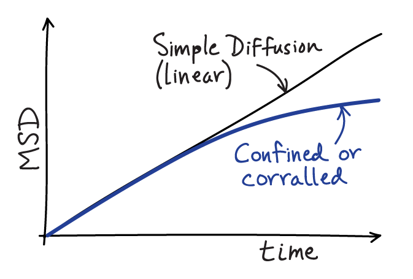 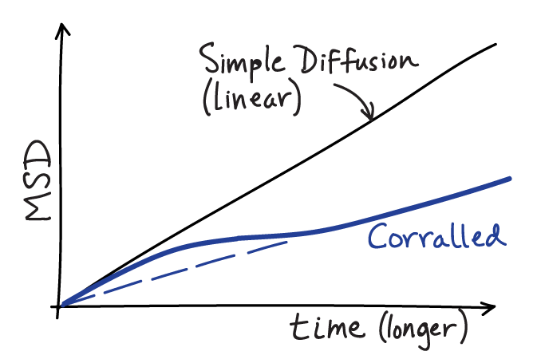
If your MSD plot behaves linearly, you can extract the diffusion constant by fitting the slope. The slope for true simple diffusion is given by $2 D d$, where $D$ is the diffusion constant and $d$ is the dimensionality of your data - e.g., $d=2$ for two dimensional data. It is absolutely essential to account for the dimensionality $d$ of your data; if you don't, your $D$ estimate will not be valid. Further, if you are analyzing two-dimensional data, proper estimation of $D$ requires the motion to have occurred on a flat (not sloped or wrinkled) surface.
More likely than not, if you are examining single molecule behavior in a living cell, the MSD will not be linear in time due to confinement or corralling (partial confinement). The MSD will typically start 'turning over', exhibiting a decreasing slope as the time separation increases, indicating some restriction in movement compared to that seen at short timescales. For motion that is not truly confined over long timescales (i.e., "corralled motion") the MSD plot must eventually become linear at suffficiently long timescales for mathematical reasons described below - but note that it may be difficult to observe this linear regime because trajectories often will be too short.
More mechanistic analyses can be applied to single particle trajectories. Below we describe some more advanced analyses for characterizing confined and picket-fence motion.
Importantly, note that conversion of raw experimental data (often a set of locations in each frame of a movie) to trajectories of individual particles will produce errors. There will be false positives (connections made between different particles) and false negatives (missed connections). The former typically will artifactually increase the MSD while the latter will decrease it. You need to be aware of the procedure and paramters used to create your trajectories in the first place. Further, the 'raw' positions and time points in a single-particle trajectory typically result from the averaging of multiple photons which may also decrease the apparent motion at short timescales. Consult the references below on these subtle but important points.
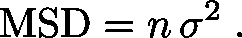 (3)
The number of steps is proportional to time ($t = n \, \Delta t$), so the MSD is also linear in time. Although we framed this discussion in a one-dimensional context, the arguments apply quite generally to higher dimensions. Note that $\sigma^2 = 2 d D \Delta t$ for dimensionality $d$.It is important to review the assumptions that went into our derivation of linearity. There were two: (i) the lack of correlation between steps - technically a lack of linear correlation but that's not important here; and (ii) the uniformity in time - the assumption that each step is like every other and hence is characterized by the same single-step variance $\sigma^2$. So if we do not observe linear correlation based on all recorded data, then one or both of these assumptions must not hold.
In a subdiffusive case where there are barriers (penetrable or not), assumption (ii) breaks down because a subset of steps occur near bariers - even though the steps are uncorrelated. On the other hand, correlations might be present, violating assumption (i), if the observation increment $\Delta t$ is too small or if the motion is driven (e.g., by a molecular motor) in a certain direction. Note that motor-driven motion might satisfy time uniformity (ii) but violate (i).
First, you should check whether your process appears to be uniform (homogeneous) in the sense that all steps arise from the same distribution, suggesting a homogeneous local environment. A simple approach for doing this is to fit the distribution of step sizes $\Delta r$ to a mixture of functions (2), which can be done using any standard mathematical or statistical software. To convince yourself whether or not a mixture of diffusion processes is present, you should calculate the "residuals" (squared error) from the fit to a linear combination of the functions and see whether the residuals decrease significantly with each additional Gaussian term. The fit will always improve somewhat as more terms are added; you need to determine whether the improvement is substantial. See the references below and consult a statistically savvy colleague.
Second, you will want to check whether the steps are correlated with one another - whether a given step has a tendency to move in the same (or opposite) direction as the prior step. Recall that in normal diffusion, there should be no correlation among the steps. If the motion is driven, for example by a molecular motor, we expect to see positive correlation among step directions. The correlation can be quantified simply using a single-step autocorrelation function, ACF. For one-dimensional data, which is easiest to understand, you will want to calculate the average $\langle \cdots \rangle$ over all step pairs of the following:
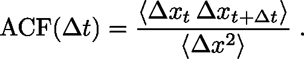 (4)
This function is zero (i.e., very small, with real data) if sequential step pairs are uncorrelated but it is positive if sequential $\Delta x$ values tend to have the same sign. The ACF will be negative if sequential steps tend to have opposite signs, which is quite possible if there are barriers that effectively cause direction reversals. The denominator of the ACF is the variance which is the natural scale for comparison with the numerator and enables you to gauge roughly whether correlation is large or small, but a more careful analysis requires comparison to truly uncorrelated snythetic data based on the same number of samples. Consult a statistically savvy colleague!Note that data for an ACF can be binned by position to see whether certain types of correlation tend to occur in certain regions of structure. For example, we expect to see "reflections" (reversals of direction) at the ends of a confining region, which will lead to a negative ACF simply as a result of the geometry.
For higher dimensional data, the analagous ACF uses the vector dot product among sequential step pair vectors $\overrightarrow{\Delta r} = ( \Delta x, \Delta y, \Delta z)$ or $(\Delta x, \Delta y)$ in two dimensions. We have
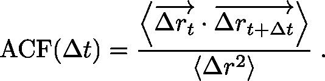 (5)
Again, the ACF is zero for uncorrelated data, but non-zero values implicitly contain information about the distribution of angles for displacement vector pairs; recall that the dot (scalar) product of unit vectors is the cosine of the angle between them. To get more detailed information, instead of using the ACF, calculate the distribution of angles - obtained using the arccos function with individual dot products - and compare that with the uniform distribution of angles expected for (fully random) simple diffusion. For subdiffusive processes, which typically are caused by obstacles of some kind, an enrichment in "reflection" angles can be expected.